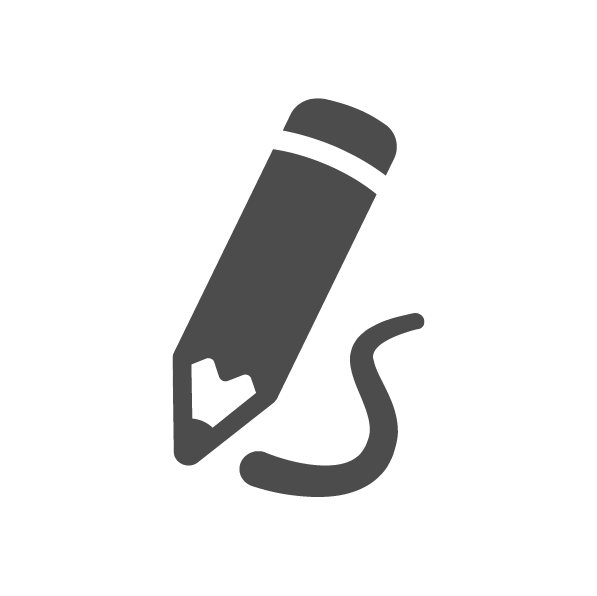
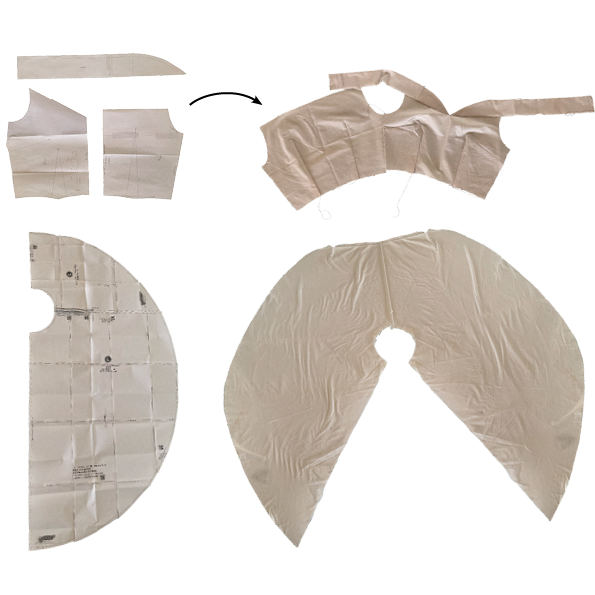
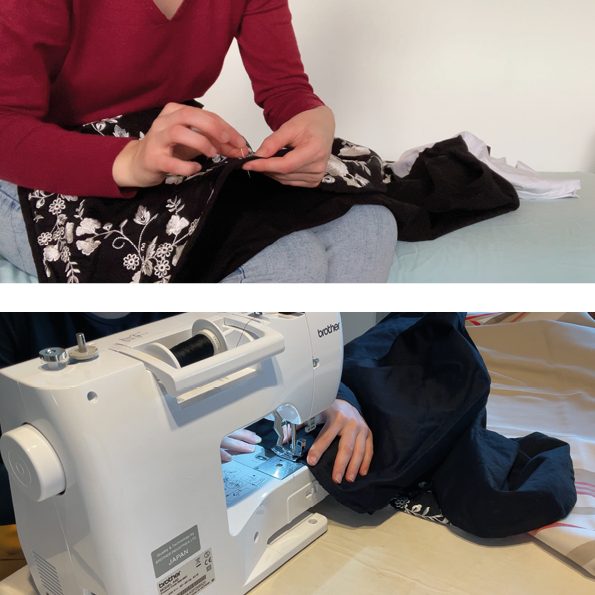

Concept Creation
Creative pattern ideation and choice of fabrics

Workshop Creation
Creation of final result with multiple sewing methods

Photo / Video
Solo photoshooting and minute photo editing with effects
Building the pattern. Tailored to my measurements.
Building initial pattern by adapting basic standard top and skirt.

Sewing it all together. One stitch at a time.
An electronic sewing machine was used for regular and strong stitches but invisible seams were hand stiched.

Showcasing the result. With a few edits.
For my first garnement photoshoot, I explored several postures and environments to obtain the best outcome and gain experience. The pictures were touched up before giving them a bit of a twist using photoshop to obtain various effects.